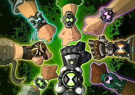

article about **Ben 10**:

---
**Ben 10: A Legendary Animated Series**
*Ben 10* is a popular animated television series that first premiered on Cartoon Network in 2005.
Created by the duo **Joe Casey** and **Joe Kelly**, the show follows the story of a young boy named **Ben Tennyson** who comes across a powerful alien device called the **Omnitrix**.
This device allows him to transform into a wide array of different aliens, each with unique powers and abilities.
Over time, the series has evolved into one of the most beloved animated franchises, with several seasons, spin-offs, and even films.
The Omnitrix, the central element of the show, is a mysterious watch-like device that holds the DNA of various alien species.
When Ben activates it, he can transform into different aliens, which gives him the strength and abilities needed to fight evil forces and save the world.
The device's creation is tied to an ancient alien civilization and is a recurring mystery throughout the series.
This innovative premise not only makes for exciting adventures but also creates moral dilemmas for Ben, as he learns to wield great power responsibly.
One of the unique aspects of *Ben 10* is its broad range of alien transformations.
Each alien form that Ben accesses offers a different power set, which keeps the show dynamic and engaging.
Some of the most memorable aliens include **Heatblast**, a fiery creature with the ability to control fire; **Four Arms**, a massive alien with superhuman strength; and **XLR8**, a speedy alien capable of running at incredible speeds.
As the series progresses, Ben gains access to even more powerful forms, constantly expanding his arsenal of alien powers.
In addition to the aliens, the show features a cast of well-developed characters, including Ben's cousin **Gwen Tennyson** and their grandfather **Max Tennyson**.
Gwen is an intelligent and resourceful character, often helping Ben navigate his challenges, while Grandpa Max is a seasoned adventurer who offers guidance and wisdom.
Together, they form a strong family unit, with each character contributing in their own way to Ben’s journey.
The dynamic between the characters adds a personal and emotional layer to the series, making it more than just a typical action-adventure show.
*Ben 10* has had a lasting impact on pop culture, spanning multiple reboots, video games, comics, and merchandise. The franchise's enduring popularity is a testament to its creative storytelling, engaging characters, and the universal appeal of its central themes—adventure, responsibility, and personal growth.
From its initial run to the more recent *Ben 10* (2016) reboot, the series continues to captivate both new and old fans alike.
*Ben 10* stands as one of the most iconic animated series of the 21st century, continuing to inspire generations of fans around the world.
---
This article provides an overview of *Ben 10*, touching on its central premise, characters, and lasting influence.
It should work well for an introductory blog post!